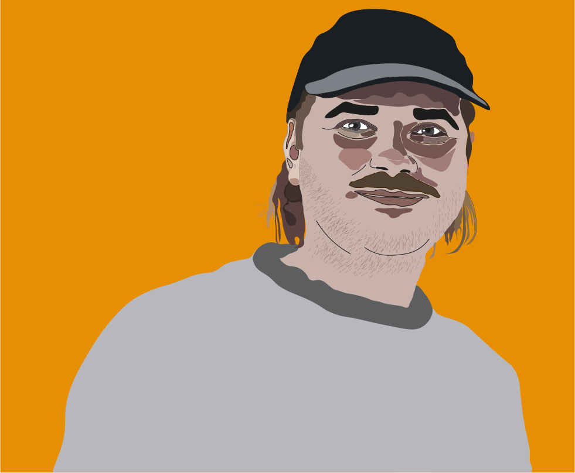

Multimediedesigner
Min store passion er at kommunikere og skabe fortællinger gennem kreative grafiske løsninger. Det kan være en eksempelvis være plakater, en infografik eller andre dekorative flader. Jeg har genenmgående erfaring med Adobe Illustrator, hvor mulighederne er uendelig, hvad end det er et portræt, satirisk kariktur eller et skarpt design.
En sjov og hurtig måde at fortælle et budskab kan gøres igennem animationer. Det kan være eksempelvis være GIF animationer. Jeg har erfaring med at lave sprite animationer, hvis du ønsker en HTML/CSS-kodet animation til din hjemmside, samt anvendelse af Adobe Animate.
Billeder og videoer er en uundgåelig del af alles hverdag. Derfor er det vigtigt, at hvis man vil kommunikere gennem enten billeder eller videoer, at de bliver redigeret skarpt og smukt. Jeg har mange års erfaring med at klippe musikvideoer og kortfilm, men klipper gerne også reklamefilm, hvor jeg bruger Adobe Premiere Pro. Billederedigering tilbyder jeg også, hvad end det skal laves i Adobe Lightroom eller Adobe Photoshop
En bad boy ligefrem? Ja, du undrer dig nok. En nordfynsk langhåret og halvbuttet fynbo er ikke det mest intimiderende, du har set. Navnet opstod i sin tid, da jeg drog mod København og læste sociologi. Folk fandt det ganske eksotisk med sådan en fynbo, der var kommet på udebane, og der gik ikke lang tid før, at jeg blev døbt Den Fynske Badboy. Til forskel fra den oprindelig engelsk betegnelse Bad Boy, der betegner en person, som er rebelsk og ikke bange for at bryde regler, så står den fynske sammentrækning badboy for noget helt andet. En badboy er derimod mere en traditionel gavtyv, der godt kan være en spilopmager og lave narrestreger, men vigtigst af alt: så gøres det med et glimt i øjet.
Dette afspejles også i mit arbejde som Multimediedesigner, hvor jeg studerer på UCL. Jeg lægger vægt på at kommunikere skarpt og humoristisk, hvor man kan gå til lige stregen. Samtidig betyder min sociologiske baggrund, at jeg har et samfundskritisk udsyn. Så hvis I er et mediehus, avis eller reklamebureau, der ønsker at kommunikere utraditionelt med kant, så er jeg manden for jer.
E-mail: stamphojjespersen@gmail.com
Tlf: 24411464